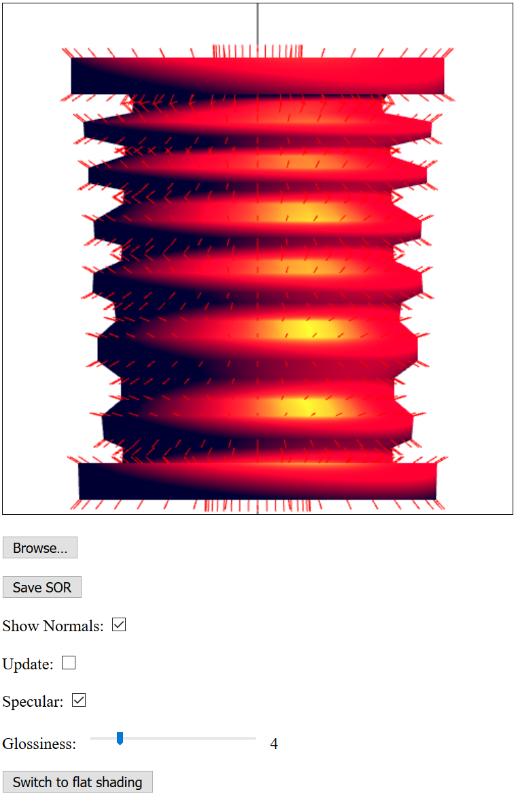

Name: Mackenzie Glynn
Login ID: mglynn
ASN#: Program 2
Date: 10/15/2016
Implemented:
- Light Source
- Specular Lighting
- Toggle for Specular Lighting
- Smooth Shading
- Toggle for Smooth Shading
- Slider for the glossiness factor
- Update function which rotates the model
- Assignment
Screenshot:
